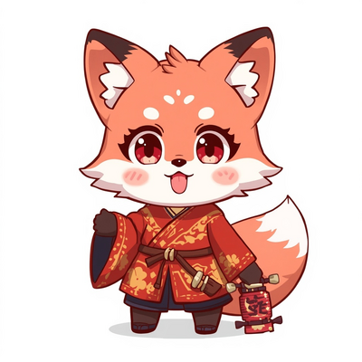

Saison Été 2026 · En direct
Kenzai
Kenzai
Release
Le calendrier anime nouvelle génération. Visualisez chaque sortie jour par jour, explorez la saison en cours et préparez-vous avec les titres à venir. Données en direct depuis AniList, filtre adulte optionnel, design néon 2026.

Données AniList en direct
Synchronisation avec l'API AniList, pagination automatique et fallbacks en cas d'indisponibilité.
Filtre +18 optionnel
Les contenus adultes sont masqués par défaut. Un simple toggle les affiche, l'état est sauvegardé localement.
Design néon 2026
Glassmorphism, dégradés animés, typographie Orbitron et animations d'entrée pour une expérience moderne.